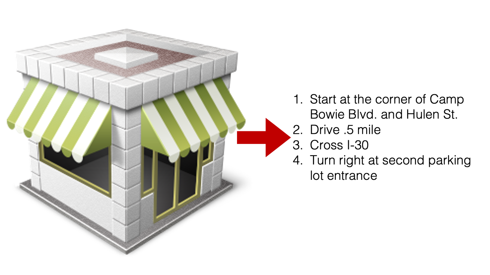

7 Images
Links
7.1 Native Quarto figures
Here are some examples of adding figures.

And I can cross reference the figure by typing @fig-directions. See Figure 7.2
Important
For cross-references to work, the image must have a caption and a label.
7.2 Adding figures with Knitr
In R4DS (link above), Hadley et al. are still using knitr::include_graphics("path") to insert images even though the book has been converted to Quarto documents. When using Bookdown, Yihui gives four arguments for using knitr::include_graphics("path") instead of native markdown image formatting. So, we will likely continue to use them too. Here is an example image code chunk from R4DS:
```{r}
#| label: fig-ds-diagram
#| echo: false
#| fig-cap: |
#| In our model of the data science process, you start with data import
#| and tidying. Next, you understand your data with an iterative cycle of
#| transforming, visualizing, and modeling. You finish the process
#| by communicating your results to other humans.
#| fig-alt: |
#| A diagram displaying the data science cycle: Import -> Tidy -> Understand
#| (which has the phases Transform -> Visualize -> Model in a cycle) ->
#| Communicate. Surrounding all of these is Communicate.
#| out.width: NULL
knitr::include_graphics("diagrams/data-science/base.png", dpi = 270)
```Here, I’m adding my own image with knitr::include_graphics("path").
And I can cross reference the figure by typing @fig-directions. See Figure 7.2
Important
For cross-references to work, the image must have a caption and a label.
Creating figures without captions
Figure captions will look like Figure X: ?(caption) if the chunk label is prefixed with fig (e.g., #| label: fig-directions), but there isn’t a valid #| fig-cap:. There are more details given here. There are two ways to resolve this issue:
- Remove the
fig-part of the label. - Add a valid figure caption.
7.3 Images
Sometimes I want to add image borders to make the image stand out a little bit from the background around them. For example, it’s kind of hard to distinguish Figure 4.1 from the text/background around it.
After a quick Google search, there appears to be a LaTeX package that will add a boarder, but I’m assuming that will only work for PDF renderings.
Additionally, I imagine that I can probably make some adjustments to the .scss file that will add boarders to images. However, that should only work for HTML renderings.
Therefore, the most straightforward and robust option might just be to add the boarder directly to the image using PowerPoint, Preview, Photoshop, etc. That’s what I did for Figure 4.2.